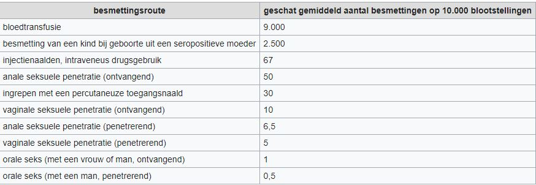

Aids is een SOA, een virus die begin jaren 80 in Amerika kwam en later in de EU. Je krijgt het door geslachtsgemeenschap te hebben met een man/ vrouw die dit virus bij zich draagt. Het komt niet alleen bij mensen voor maar ook veel bij apen.
Sommige mensen krijgen griepachtige verschijnselen kort nadat ze hiv hebben opgelopen. Andere mensen hebben last van opgezette lymfeklieren, keelpijn, huiduitslag, recent gewichtsverlies, misselijkheid, braken, diarree, gewrichtspijn. Deze klachten komen voor bij mannen en bij vrouwen. Later kunnen er nog andere klachten ontstaan zoals enorme moeheid, nachtzweten, veel gewichtsverlies zonder duidelijke reden, koorts, hardnekkige diarree en kortademigheid. Aids kan wel worden behandeld door medicatie, maar het virus kan niet verdwijnen. Je inmuunsysteem is zo aangetast dat je altijd vatbaar ben voor allerlei ziektes.
Je kan besmet raken met het virus door anale, vaginale of orale seks. Je kan ook besmet raken door een bloedtransfusie met besmet bloed of door het gebruik van besmette injectienaalden. Het kan zelfs worden van moeder op kind tijdens de zwangerschap, geboorte of door borstvoeding. Het gebruik van een condoom biedt bescherming, maar is nooit helemaal betrouwbaar. Het condoom kan namelijk ook scheuren. Toch blijft het belangrijk om een condoom te gebruiken. Hieronder staat een tabel over het risico op besmetting en in welke vorm.
